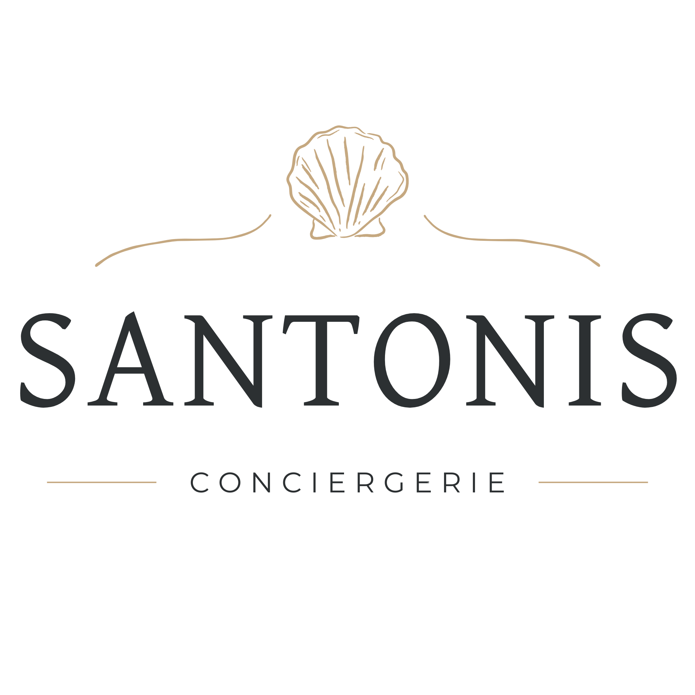

Une personne, une relation
Un prénom derrière
chaque attention.
Parce que confier son logement est avant tout une question de confiance et de proximité, faisons connaissance.

Mandy · Fondatrice de Santonis
Basée à Corme-Royal (Charente-Maritime)
L'esprit Santonis
Moi, c’est Mandy. Installée à Corme-Royal, au cœur de la Saintonge romane et à deux pas de la côte atlantique, j’ai fondé Santonis avec une vision claire et sincère : être votre relais de confiance sur place, disponible, rigoureux et attentif.
Ici, vous ne parlez pas à une plateforme impersonnelle ou à un centre d’appels lointain. Vous échangez directement avec moi. Je connais personnellement chaque maison que j’accompagne, ses particularités, ses petites habitudes et ce qui fait tout son charme.
Avant d’évoquer des serrures, des codes ou des plannings, j’aime prendre le temps d’échanger. Comprendre comment vous vivez votre maison, ce que vous attendez d'une conciergerie et la manière dont vous souhaitez que vos hôtes soient reçus.
Les engagements qui guident mon travail
La taille humaine
Un nombre de biens volontairement maîtrisé pour garantir une disponibilité réelle, une qualité irréprochable et une réactivité constante à chaque étape.
L'ancrage local
Vivre à Corme-Royal permet d'intervenir rapidement vers Saintes, Royan et Rochefort, tout en valorisant avec passion les artisans et producteurs de notre région.
Le soin du détail
Des draps parfaitement tirés, une communication fluide avec les voyageurs, un contrôle méticuleux : ce sont les petites attentions qui créent les grands souvenirs.